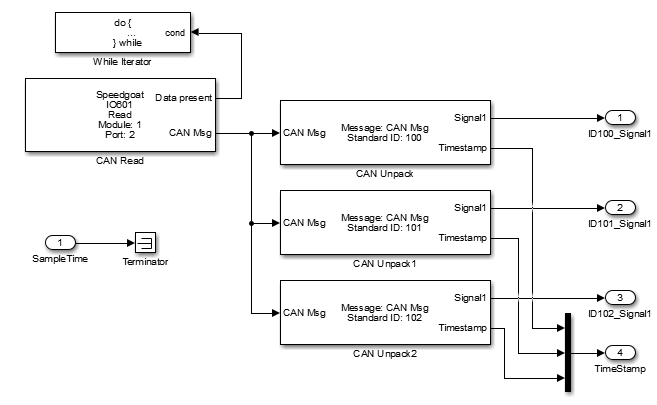

IO691 Usage Notes — Usage information about the I/O module
The CAN Read block reads one message from one port of the IO691 input queue. The "Data present" output port shows if there are more messages available in the queue.
If your model runs faster than the CAN messages come in, it is safe to just read one message on each model execution step. If, however, there is a chance that more than one CAN message might be received per step, you may want to read all the available messages.
This is most conveniently done with a "While Iterator" subsystem.

The "Sample Time" input port defines the rate at which the subsystem is executed. Otherwise it will run on the base rate.
The IO691 Setup driver block allows you to define CAN messages to be sent during initialization and termination of the real-time application. The driver block can send messages at each application start and stop. The main purpose for sending these messages is to initialize or terminate other CAN nodes on the network, such as CANopen or DeviceNet nodes. Even if the CAN layers are not directly supported, the model can usually communicate with these nodes with standard CAN messages, provided the nodes are initialized. The initialization and termination fields of the Setup blocks are intended for this purpose.
You define the initialization and termination CAN messages by using MATLAB® structure arrays with CAN-specific field names. This approach was also used for the RS-232 and general counter driver blocks found in the Simulink Real-Time™ I/O library. Refer to these driver blocks and their help for additional information about this basic concept.
The CAN Setup block-specific field names are:
Channel: Selects the CAN channel on which the message is sent. Valid values are either 1 or 2 (double)
Protocol: Defines the protocol type of the message to be either "CAN" or "CAN-FD". The permitted data range is automatically adjusted to be [0 8] byte for "CAN" or [0 64] byte for "FD". Use a character vector with this parameter
BRS: Defines if the fast data baudrate should be used for CAN-FD. Valid values are either 0 for standard baud rate or 1 for fast data baud rate (double)
Type: Defines whether the message to be sent is of a standard or extended type. Valid values are either "Standard" or "Extended" (character vectors)
Identifier: Defines the identifier of the message. The value (scalar) must be in the corresponding identifier range (standard or extended)
Data: Defines the data frame to be sent out along with the CAN message. The length of the row vector defines the data frame size. The limits depend on the selection made for the Protocol parameter.
Pause: Defines the amount of time, in seconds, that the Setup block waits after this message has been sent before sending the next message. Valid values are 0–0.05 seconds. Some CAN nodes need time to settle before they can accept the next message. For example, the node must settle when the previous message puts it in a new operational mode. Use this field to specify the idle times